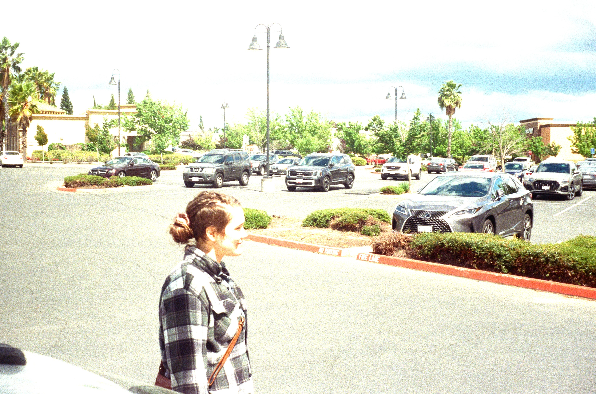
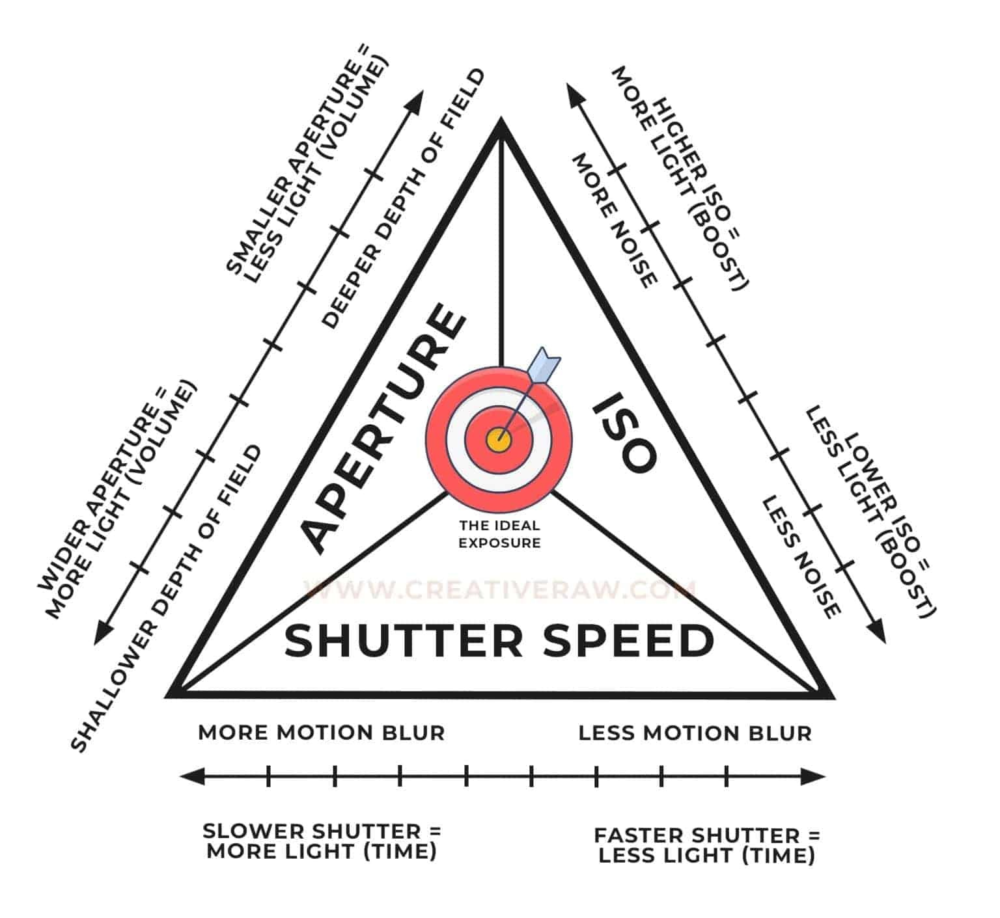

Understanding the Exposure Triangle: Part 1 - Film Speed, Aperture, and Shutter Speed
Understanding the connection between Film Speed, Aperture, and Shutter Speed, together known as the Exposure Triangle, will help you take properly exposed photos. Here is Part 1.
A properly exposed photo might look something like this:

An Improper one might look really dark or washed out, like this one:

To avoid getting a washed out or dark photo, there are three concepts one must understand to take properly exposed photos: Film Speed, Aperture, and Shutter Speed.
- Film Speed - This is your chosen films sensitivity to light. It is shown as ISO 400, 200, etc. The higher the sensitivity, the more grain will appear in your photos. Please refer to the Quick Overview of Film for your Camera for more information.Note: Some cameras allow you to change a setting which lets the camera know the film speed and compensate accordingly. The Argus C3 does NOT have this feature. The dial you see on the back of your camera is a reminder dial only.
Aperture - This is the size of the opening in the lens that takes your photo, dictating its Depth of Field. This is indicated on the front of your camera on the aperture dial, e.g. f/5.6. known as an 'f-stop', or f-stop 5.6. The shallower it is (the smaller the number), the more light is allowed through but objects in front of and beyond your subject will be blurry. This works in reverse. The deeper your Depth of Field, the less light is allowed through but more in frame will be in focus.
- Shutter Speed - This is the speed your lens will open and close as it takes a photo. eg 1/300th of a second. The longer the shutter is held open, the more light comes into the camera and into the photo. Faster shutter speeds are for capturing faster subjects but require a lot of light. Subjects in dimmer light need slower shutter speeds to allow light to enter but this makes subjects in photos prone to motion blur in the photo.
The graphic below helps outline the concepts described.
